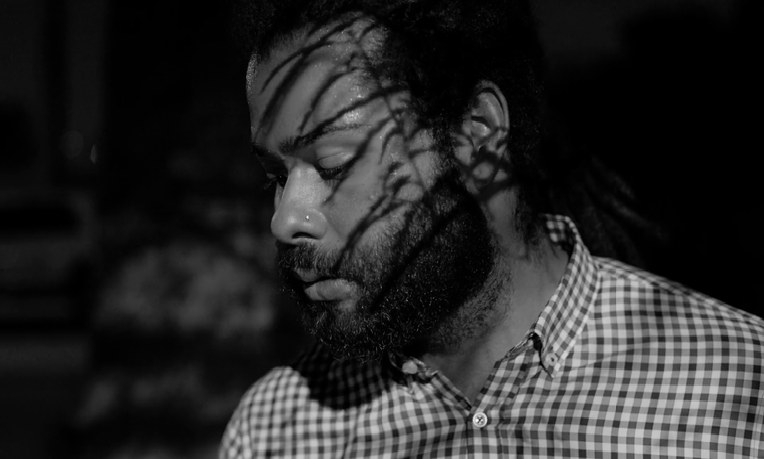
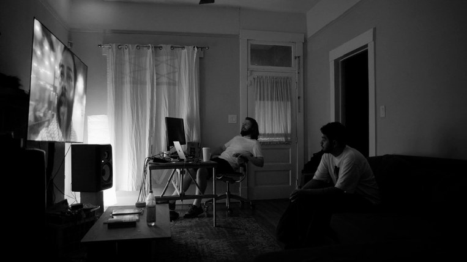
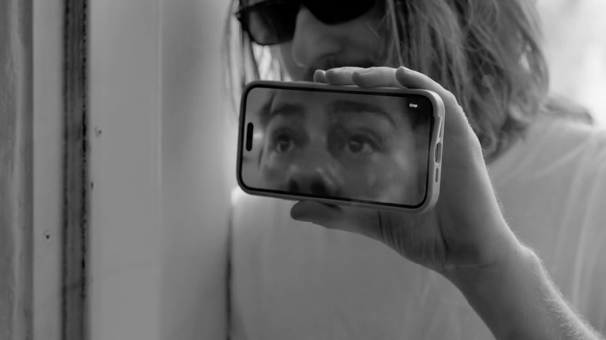
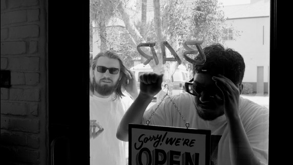
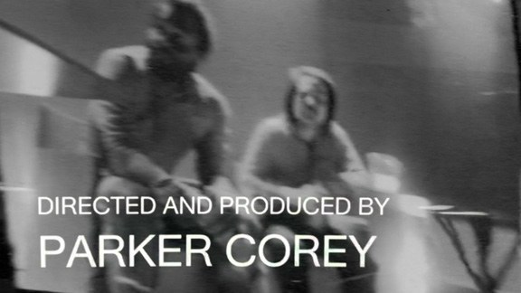
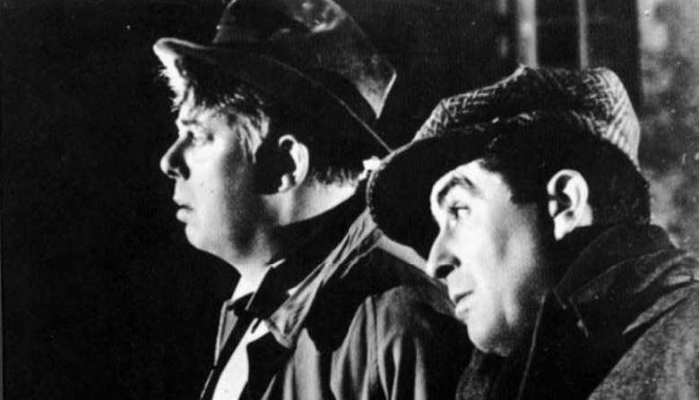
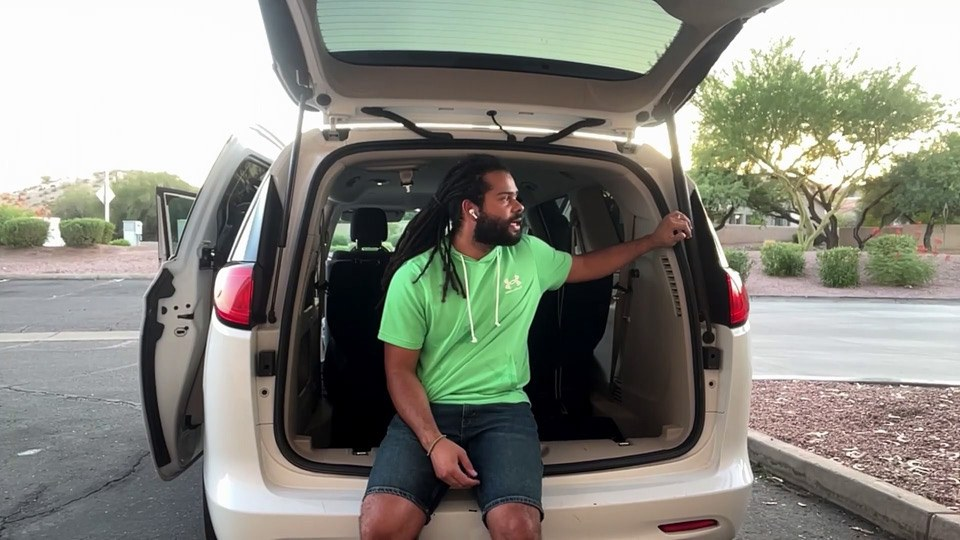

Issue #1 — To Utopia
A Cold Approach to Phoenix
Interview with Parker Corey on Nightgame
Few films today fit the mold of what used to be called a city symphony, and even fewer would dare to extend what such a sub-genre would entail in today's world. This description, once defined by frenetic cutting of city landscapes, observations of working-class struggles and/or leisure and how time is described through the two factors mentioned (my mind goes to The Man with a Movie Camera, People on Sunday, Working on the Douro River), struggles to readapt itself due to a rapidly alienated culture uninterested in observing itself on a mass scale. It seems like directors want very little movement now; presence in film is nothing but a memory. The age of the psychological character study, the A24 secret recipe, is in full effect. “Lest people remember films can evoke something deeper than what can be found in the DSM-5, keep that camera still and those actors center-frame,” the shareholders maintain!
Enter Nightgame, which I feel is the latest evolution of the city symphony. The city under observation is Phoenix, Arizona, and is given ontology through the livestreams of pickup artist Matt Nightgame, played by the vocalist of Phoenix-based rap duo By Storm, Nathaniel Ritchie. Through the clumsy, run-and-gun YouTube streams Nightgame captures via iPhone, we are arrested by the decadence of 2020s America. Ritchie’s character does not interrogate the car-centric architecture, the fluorescent lighting of a Target, the neon haze of a rooftop bar or the tepid contemporary art installation he finds himself trying to woo women in. These environments evoke themselves through Ritchie instead. So when our main protagonists, played by director Parker Corey (By Storm’s producer), Armando Gabaldon and Anta Diallo, begin to investigate a murder that could lead back to Nightgame, the film diverts itself from interrogating psychology in favor of topography. As displayed in the ending, this investigation is fruitless. Matt Nightgame poses the question, but Phoenix itself is the answer. I talked to director Corey in early August about the film, which premiered on September 25 at the Chicago Underground Film Festival. The interview contains spoilers for the film.

Chaz Mullis: The burgeoning societal consequences of people producing pickup artist content with Meta glasses seem to be present here without Ritchie having Meta glasses. Were you thinking about this in the scenario for Nightgame? I’m not sure if Meta glasses were starting to become a thing during that time.
Parker Corey: A lot of people ask if we used Meta glasses as soon as they hear the concept and I’ve had to tell them we shot this in the summer of 2024 before they were a thing. I looked it up and technically they had just been released, but I don’t think they had caught on yet. I remember we even briefly looked at a generic “spy” glasses option at one point but they made too overtly poor of an image, so I scrapped it. The Meta POV trend is bittersweet timing because on one hand I missed out on depicting them, but at the same time, they have flipped the relevancy of the film. When we were shooting it I thought a lot of what made Matt’s character ridiculous was him being one of the last holdouts of a dying pickup culture, like the last cowboy realizing his town isn’t for him anymore. But now pickup is back, maybe bigger than ever. It’s rebranded as “rizz” but the Meta glasses are pure infield content. So I figure people will have a more visceral response to him now.
CM: There’s a match-cut in the beginning of the film going from Ritchie’s livestream to the stream being played on your TV. The TV morphs until we realize the change in locale, and in my opinion the change from the objective to the subjective. Is this the case in your point of view or is it reversed?
PC: Yeah, I’d say it emphasizes a split between the raw content sitting online versus a constructed narrative world where our characters are receiving and hyper-analyzing it. From that match cut on, I like to think the rest of the film moves towards blurring that split back together so that an icier, distanced gaze forms on Armando and I’s characters especially. Hopefully it’s even a little Brechtian by the end.

CM: To follow up, is the choice to have Ritchie’s POV shot on iPhone a break into a more realist perspective, whereas your characters’-Armando’s and Anta’s perspective is one that’s more passive in the face of the real? I’m going off the choice for B/W for your scenes.
PC: One thing I’m totally hungry for is presence. Without it I can still admire a film but it feels like the sixth gear is missing. There’s a through line between all my favorites across the years: Renoir, Ray, Stévenin, Pialat, Ferrara, Graf. All of them are at times mad with presence, like Bitter Victory in the dunes. So the iPhone stream is a quick way to get there, realist definitely, but a more honest one than all the current festival films obsessed with 16mm (or increasingly miniDV), which I feel confuse nostalgic “aura” for presence. We didn’t only film on the iPhone; we streamed it on Twitch and then downloaded the archived streams, which was really just for fidelity to the reference material, but now I realize even that our original fixation was so rooted in presence. Our rabbit hole began with the same Channel 5 video everyone’s seen of pickup artists in Vegas, which is funny, sure, but everyone there is so performative, so stylized, it really is only funny at a psychological level. By the time we dug up these multi-hour archived streams of a man walking around Target fumbling with his phone in the little child's tray of the shopping cart, we saw someone in less of a mask. It had a thrilling durational presence to it. That’s what actually got us riffing on it as a cinematic idea; the most minor details opened up a whole world outside it. So with that density in mind, it makes sense that the B/W feels passive. Our characters do have more fun at the desk analyzing the videos than anywhere else in the film.
CM: Does Phoenix play a role in the film in terms of dictating the story, the choice of shots, motivations of characters, etc.?
PC: Completely. I tell everyone who visits that I think Phoenix is the second most representative city of 2020’s America (second to Austin) in the way that it’s a grifter transplant’s playground. Its main appeal is it being fully amenity-maxxed without quite having the housing costs that come from a longstanding culture of even a B-city like Seattle. Already that aligns with the overall ambience of the film, which is its real reason to be made. (Is it too much to say in noir the city is less a character in the film than it is a moral? Or is that commonplace?) Then, functionally of course, the city determines shots. Some of the streams were made like an open world game with Nathaniel roaming around on an eBike until he came across one of the actresses we had planted. Other streams, like the long opening sequence, were carefully planned out. We timed the walk to hit certain streets, alleys, etc., knowing they would have the right amount of time to chat while still pacing their beats in the right locations. Then there’s that absurdly long sequence early in the film with us in the living room just reacting to various streams and I keep coming back to moments just showing places in Phoenix. In theory it should be such a drag but based on all the feedback I’ve had, that has never been a problem. It’s a breeze just to look around, especially when it’s funny.

CM: There is a community(s) in the film but it appears in a Rivette secret society way, in which these seemingly random encounters and background actions culminate in the final sequence. Would you say the AI face at the end gestures to this concept? Maybe not in reference to Rivette but to online groups as a whole.
PC: Yeah, I think the ending came up as a general guilt. I wanted to emphasize that group damnedness in noir where even the fringe characters are being chewed up. I love Pickup on South Street. Then, of course, the classic unresolved answer trope synching with that ridiculous AI image, too natural not to see it through. The credits bit was really just a joke Kiahna (the actress in the opening stream) happened to make on set and we were like ‘well, of course we have to do that.’ The cheekiness there specifically is where you get more of that Rivette thing I think; it opens it up to the smaller community on the production side.
CM: Tell me about some general influences for the style of the film. You’ve been a big Pialat fan so I wondered if there’s anything you took from him. Of course, there’s the noir influences here too.
PC: I’d say first that Blow-Up is the microgenre it’s working within, following The Conversation and Blow Out, with a “lolcow” replacing photography or sound as the medium the murder is incidentally captured in. With Pialat it mostly comes back to presence, but there’s also that vulnerable harshness in the characters even when it’s autobiographical. I was watching a lot of Verhoeven before writing the script, which I think comes through in trying to at least have a clever cinematic idea every few scenes.


Then I watched The Rules of the Game during editing and it was a revelation, giving me full power to push all of the life on top of each other, being so excited to just show things in the world to the camera, especially when they are a bit ridiculous and desperate, and that this will become beautiful in the future. I like to hope that it is spiritually the closest film to Nightgame, but that’s completely insane levels of wishful thinking since it’s also the greatest film ever made.

CM: Pedro Costa and Chris Fujiwara once talked about the Tourneurian sensation of characters on the verge of disappearance from their environments1. Does Ritchie’s character make sense within this context?
PC: This definitely comes back to that different social context mentioned above where, when we were making this, I thought Matt was one of the last gunslingers in a culture society had discarded as too vulgar. It’ll still be there in the different translations between pickup culture and modern “rizz”. The older one we depict is much more codified. It has its own jargon: infields, SDLs (an abbreviation of same day lay), even nightgame/ daygame. Reading the way Costa and Fujiwara discuss Night of the Demon here, I keep blurring it in my memory with Michael Redgrave in Losey’s Time Without Pity, and both of these combined make me wish I had gone much further in setting Matt up as a damned man. There’s the scene of him with the van where I should have.
CM: Talk about the choice of sounds and music in the film, why you chose to outsource the soundtrack to another artist(s), why you like said artist(s), etc.
PC: Well, it started because I don’t think my skillset is good for film scoring. And then I reached out to Seth Aaron Graham before shooting because his collab record with More Eaze, The Heart Pumps Kool-Aid, felt in line with the film. A mix of digital texture and programming with a lot of classic jazz and orchestral bits, not to mention a song title like “Sadness, infinite America … shit”. So we were already looking at some of the footage with those songs overlaid even during the shoot, and then Seth ended up being so accommodating. He let me use plenty of moments from that record directly in the edit, even digging up the sessions to rework them with the film’s pacing while writing new material for other sections, of course. In a way that let me have a hand in the music more suited to the sampling I’m used to.

CM: Was Ritchie shown anything in particular to prepare for his role?
PC: Yes, he closely studied the reference videos that inspired Armando and I to write the movie in the first place. A lot of the streams were painstakingly recreated because the reference material was so much richer than anything you see in movies. Usually these types of characters are awful; the filmmakers are too interested in making them legible to older liberal types where they become meaningless hollow people. We made such an effort to avoid this that I would say we actually had to tone down the reference material.
CM: What comes next for you as a filmmaker, whether that be directing or producing or acting?
PC: There’s a very personal and melodramatic script I’ve written about two brothers going to the Philippines to find their sexpat retiree father, a half finished outline for a YouTube web series of 200+ 510min episodes adapting Musil’s The Man Without Qualities to 2020s Los Angeles and a high concept about an AI girlfriend scammer who gets doxxed. It’s a horror/thriller more in line with The Night of the Demon mentioned above. I would love to make any one of them next.